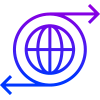

디모데성경연구원
Founded in September 1991
디모데성경연구원은 하나님의 백성의 삶을 변화시킴으로써 하나님께 영광을 돌리는 것을 목표로 출발한 지 오랜 세월이 지났습니다. 모두가 하나님의 은혜요 은총이었습니다. 하나님의 보호하심과 인도하심이 없었다면 저희는 오늘 이 자리에 있을 수 없었기에 하나님께 감사와 찬양을 드리지 않을 수 없습니다.
그동안 저희는 최선을 다해왔다고 자부하지만 아직도 부족한 부분이 많은 것도 부정할 수 없습니다. 그래서 급변하는 시대에, 새로운 자세로 주님의 뜻과 은혜 가운데 주어진 사명과 비전을 이루어나가기 위해 더욱 겸손히 섬기려고 합니다.
앞으로도 저희의 사역이 교회를 섬기는 사역자들에게 더욱 알찬 자원이 되기를 소망합니다. 그것을 발판으로 우리 삶의 기초요 기본인 가정과 일터가 변화되는 일에, 더 나아가서 교회와 지역 사회와 국가가 새로워지는 일에 하나님의 백성된 모든 성도가 축복의 통로 역할을 온전히 감당하는 모습을 보게 되기를 꿈꿔봅니다.
이제 그 일을 이루게 하실 오직 한 분이시며 우리의 유일한 소망이 되시는 예수님만을 바라보며 감사와 찬양과 기쁨을 가지고 저희에게 주어진 길을 힘차게 달려가고자 합니다.
그동안 저희는 최선을 다해왔다고 자부하지만 아직도 부족한 부분이 많은 것도 부정할 수 없습니다. 그래서 급변하는 시대에, 새로운 자세로 주님의 뜻과 은혜 가운데 주어진 사명과 비전을 이루어나가기 위해 더욱 겸손히 섬기려고 합니다.
앞으로도 저희의 사역이 교회를 섬기는 사역자들에게 더욱 알찬 자원이 되기를 소망합니다. 그것을 발판으로 우리 삶의 기초요 기본인 가정과 일터가 변화되는 일에, 더 나아가서 교회와 지역 사회와 국가가 새로워지는 일에 하나님의 백성된 모든 성도가 축복의 통로 역할을 온전히 감당하는 모습을 보게 되기를 꿈꿔봅니다.
이제 그 일을 이루게 하실 오직 한 분이시며 우리의 유일한 소망이 되시는 예수님만을 바라보며 감사와 찬양과 기쁨을 가지고 저희에게 주어진 길을 힘차게 달려가고자 합니다.
신앙고백
본 연구원은 성도들의 훈련과 양육을 위한 커리큘럼을 개발하여 보급하며 한국교회와 성도를 돕는 기관으로서 우리는 오직 한분이신 하나님이 성부, 성자, 성령의 삼위일체로 존재하심을 믿습니다.
우리는 예수님이 구원을 위한 유일한 길로 육신을 입고 이 땅에 오신 하나님의 아들이며, 죄가 없으신 분으로서 인간의 죄를 위해 죽으시고, 부활하시고, 승천하셨으며 다시오실 영원한 왕이심을 믿습니다.
우리는 성령님의 신성과 인격을 믿으며, 그분이 우리 안에 내주하시며 날마다 거룩한 삶으로 인도하시는 하나님이심을 믿습니다.
우리는 성경이 성령의 감동으로 기록된 오류없는 하나님의 말씀임을 믿습니다.
우리는 인간이 하나님의 형상대로 지음받은 존재임을 믿으며, 죄로 인해 인간에게 찾아온 죄의 삯인 죽음은 하나님의 은혜의 선물인 그리스도의 죽음을 믿고 그분을 영접함으로 해결됨을 믿습니다.
본 연구원은 이러한 신앙고백을 바탕으로 아래와 같은 사명과 비전, 그리고 핵심가치를 추구합니다.
우리는 예수님이 구원을 위한 유일한 길로 육신을 입고 이 땅에 오신 하나님의 아들이며, 죄가 없으신 분으로서 인간의 죄를 위해 죽으시고, 부활하시고, 승천하셨으며 다시오실 영원한 왕이심을 믿습니다.
우리는 성령님의 신성과 인격을 믿으며, 그분이 우리 안에 내주하시며 날마다 거룩한 삶으로 인도하시는 하나님이심을 믿습니다.
우리는 성경이 성령의 감동으로 기록된 오류없는 하나님의 말씀임을 믿습니다.
우리는 인간이 하나님의 형상대로 지음받은 존재임을 믿으며, 죄로 인해 인간에게 찾아온 죄의 삯인 죽음은 하나님의 은혜의 선물인 그리스도의 죽음을 믿고 그분을 영접함으로 해결됨을 믿습니다.
본 연구원은 이러한 신앙고백을 바탕으로 아래와 같은 사명과 비전, 그리고 핵심가치를 추구합니다.
사명/비전/핵심가치
“그러나 너는 배우고 확신한 일에 거하라 네가 뉘게서 배운 것을 알며 또 네가 어려서부터 성경을 알았나니 성경은 능히 너로 하여금 그리스도 예수 안에 있는 믿음으로 말미암아 구원에 이르는 지혜가 있게 하느니라 모든 성경은 하나님의 감동으로 된 것으로 교훈과 책망과 바르게 함과 의로 교육하기에 유익하니 이는 하나님의 사람으로 온전케 하며 모든 선한 일을 행하기에 온전케 하려 함이니라”(디모데후서 3:14~17)
-

사명 Our Task
디모데성경연구원은 제자도와 지도력을 위해 탁월한 성경적 가르침과 훈련과 자료들을 제공하는 이 땅의 촉매자로 존재한다.
-
비전 Our Vision
우리의 비전은 최대한으로 많은 그리스도인들이 그들의 세대에서 선한 영향력을 끼침으로 하나님께 영광 돌리는 것을 보는 것이다.
-
핵심가치 Core Values
성경중심, 지도력, 탁월성, 동역, 전 세계적, 삶의 변화, 제자도
핵심사역
-
성경 공부 사역
-
티칭 개발 사역
-
지도력 개발 사역
-
가정 사역
-
출판 사역
history
2016
- 02가정사역 페스티발을 개최하다.
- 03‘로마서 8장 그리스도인’ 세미나 개최 및 보급하다.
- 06교육부서 지도자 및 교사 컨퍼런스를 진행하다.
- 06이큅 리더십 페스티발을 진행하다.
- 10‘구약의 파노라마’ 강사 페스티발을 진행하다. (서울)
- 11‘주기도문’ 세미나 개최 및 보급하다.
- 11‘구약의 파노라마’ 강사 페스티발을 진행하다. (대전, 부산)
2017
- 11‘구약의 파노라마’ 개정판을 제작하여 강사훈련을 진행하다.
2018
- 02‘심플한 구약의 파노라마’ 세미나 개최 및 보급하다. (서울, 대전, 광주, 부산)
- 03‘여성사역자를 위한 구약의 파노라마’를 개최하다.
- 11‘신약의 파노라마’ 강사 페스티발을 진행하다.(서울, 대전, 광주, 부산)
- 11‘신약의 파노라마’ 개정판을 제작하여 강사훈련을 시작하다.
- 12‘삶의 변화와 성장훈련’ 세미나 개최 및 보급하다. [‘삶의 변화의 기적’ 개정판]
2019
- 02‘심플한 신약의 파노라마’ 세미나 개최 및 보급하다. (서울, 대전, 광주, 부산)
- 03‘결혼 예비 학교’ 과정 개발 및 보급하다. [‘하나님이 보여 주신 행복한 부부 생활’ 개정판]
- 07‘성도를 세우는 5가지 기둥’ 세미나 개최 및 보급하다. [‘목적이 이끄는 삶’ 개정판]
- 12‘하나님이 조각하시는 걸작품 인생’ 세미나 개최 및 보급하다.
2011
- 04'제1회 이큅코리아 리더십 페스티발’ 개최하다.
- 04'믿음의 테스트' 세미나 개최 및 보급하다.
- 09'제2회 이큅코리아 리더십 페스티발’ 개최하다.
- 10이큅코리아의 ‘재능 플러스 알파 리더’ 세미나 개최 및 보급하다.
- 10'선교의 파노라마' 세미나 개최 및 보급하다.
2012
- 07담임목회자 초청 '목회세미나’를 필그림하우스에서 개최하다.
- 07도림동으로 사무실 이전하다.
- 12'제3회 이큅코리아 리더십 페스티발’ 개최하다.
2013
- 02이큅코리아의 '오늘을 최고로 만드는 리더’ 세미나 개최 및 보급하다.
- 03부산지역 '목회자 사모’ 세미나 개최하다. [구약의 파노라마]
- 05'찾아가는 세미나’ 개최하다. [김포 지역 목회자 대상]
- 06'참 믿음의 5가지 가치관' 세미나 개최 및 보급하다. ['삶을 파괴하는 5가지 거짓말' 개정판]
- 09'보이지 않는 전쟁' 세미나 개최 및 보급하다. [‘영적 전쟁’ 개정판]
- 10'신약의 파노라마 플러스' 과정 개발 및 보급하다.
- 11'스튜어드십 : 선한 청지기의 삶' 세미나 개최 및 보급하다.
- 12'하나님이 빚으시는 성품' 세미나 개발 및 보급하다.
- 12'제4회 이큅코리아 리더십 페스티발'을 개최하다.
2014
- 02'구약의 파노라마 플러스' 과정 개발 및 보급하다.
- 04예수교대한성결교 사모수련회 '로마서 12장 그리스도인'으로 찾아가는 세미나 개최하다.
- 06이큅코리아의 '실패를 딛고 전진하는 리더' 세미나 개최 및 보급하다.
- 07'그리스도인의 삶의 발견' 과정 개발 및 보급하다.
- 08'크리스천 베이직' 과정 개발 및 보급하다.
- 11'하나님이 형통하게 하시는 삶' 세미나 개최 및 보급하다.
2015
- 04'하나님이 보여주신 행복한 부부 생활 플러스' 세미나 개최 및 보급하다.
- 07'평신도 리더십 개발' 과정 개발 및 보급하다.
- 11이큅코리아의 '생각의 변화로 성장하는 리더' 세미나 개최 및 보급하다.
- 11'평신도 지도자를 위한 교회론' 과정 개발 및 보급하다.
- 12문래동 센터플러스로 사무실 이전하다.
2001
- 03‘하나님이 보여 주신 행복한 부부 생활' 세미나 개최 및 보급하다.
- 03이향규 목사 총무로 부임하다.
- 05신정1동으로 사무실 이전하다.
- 12김명호 목사가 한국대표직을 사임하면서 이재학 목사가 한국·국제대표 맡다.
2002
- 04‘야베스의 기도' 세미나 개최 및 보급하다.
- 09각 지역에 팀장들을 세우다. (서울, 경기, 대구, 부산, 광주, 전주, 대전)
- 11‘영적 도약의 경험' 세미나 개최 및 보급하다.
2003
- 06‘포도나무의 비밀' 세미나 개최 및 보급하다.
- 11‘비전 있는 삶' 세미나 개최 및 보급하다.
2004
- 03‘좋은 부모 되기' 세미나 개최 및 보급하다.
- 05‘목적이 이끄는 삶' 세미나 개최 및 보급하다.
- 10전주 전북지부 대표로 이용규 목사(전주샘물교회 담임)를 임명하다.
2005
- 01도서출판 ‘월드티치’를 등록하다.
- 03‘삶의 변화의 기적' 세미나 개최 및 보급하다.
- 07이큅코리아 사역 시작 및 리더십 개발 (1) 세미나 개최 및 보급하다.
- 10‘예수님의 격려' 세미나 개최 및 보급하다.
2006
- 03‘리더십 개발 (2)' 세미나 개최 및 보급하다.
- 08‘영적 전쟁' 세미나 개최 및 보급하다.
- 09‘리더십 개발 (3)' 세미나 개최 및 보급하다.
2007
- 03‘리더십 개발 (4)' 세미나 개최 및 보급하다.
- 05미국 디모데성경연구원 총무 신현빈 목사가 한국 디모데성경연구원 해외사역총무로 부임하다.
- 06‘크리스천 홈' 세미나 개최 및 보급하다.
- 09‘리더십 개발 (5)-(6)' 세미나 개최 및 보급하다.
- 12‘로마서 12장 그리스도인' 세미나 개최 및 보급하다.
2008
- 02‘변화를 만드는 여성들' 세미나 개최 및 보급하다.
- 06‘삶을 파괴하는 5가지 거짓말' 세미나 개최 및 보급하다
- 12'생명력있는 그리스도인의 삶' 세미나 개최 및 보급하다.
2009
- 11제주사역박람회 '장년 양육과 훈련을 위한 사역 페스티발' 개최하다.
- 12이향규 목사 대표 총무직을 사임하다.
2010
- 01해외사역 총무 신현빈 목사 한국 디모데성경연구원 대표 총무 및 월드티치 대표로 부임하다.
- 03이큅코리아의 '360도 리더' 세미나 개최 및 보급하다.
- 10이큅코리아의 '함께 승리하는 리더' 세미나 개최 및 보급하다.
- 12'구약의 파노라마' 강사 페스티벌 개최하다.
- 12'영적 성장의 7단계' 세미나 강사 자료 개발 및 보급하다.
1991
- 05양승헌 목사와 이재학 목사가 디모데성경연구원을 설립하다.
- 06미국의 달라스에서 구약의 파노라마 세미나로 첫 발을 내딛다.
- 09캘리포니아 주 정부로부터 비영리단체로서의 인가를 받다.
1992
- 03서울에 소재한 남서울교회에서 구약의 파노라마 세미나를 개최함으로 한국 사역의 장을 펼치기 시작하다. 파이디온 선교회 사무실에서 디모데성경연구원 지부를 시작해서 정봉채, 황성준, 이기영, 최광희 목사 등 여러 한국책임자들을 거치면서 성장 발전하다.
1998
- 01파이디온 사무실에서 독립하여 사당동에서 단독 사무실을 운영하면서 손기성 목사가 총무로 부임하다.
1999
- 01한국대표로 김명호 목사, 국제대표로 이재학 목사가 일을 분담하다.
2000
- 02‘피플 퍼즐' 세미나 개최 및 보급하다.
- 03‘유혹의 시대를 거룩하게 사는 비결' 세미나 개최 및 보급하다.